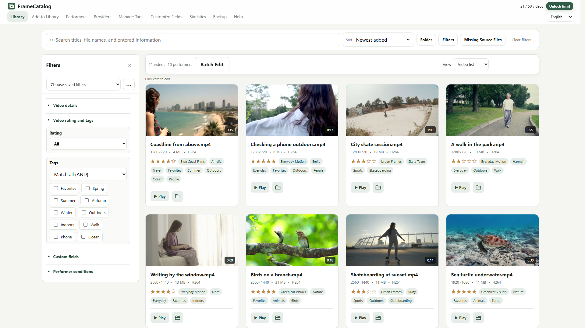
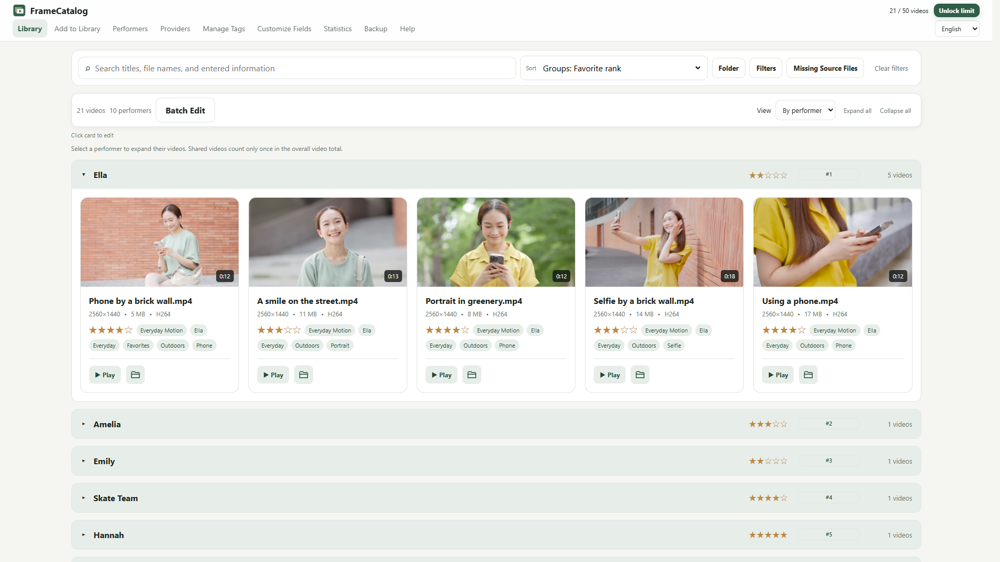
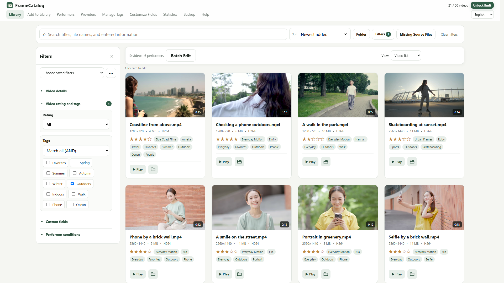

Manage videos on your PC
Select files or folders to add videos in formats such as MP4, MOV, MKV, and AVI. FrameCatalog reads details such as duration and resolution while keeping your files in place.
FrameCatalog is a video organizer for Windows and a local video library manager.
Bring your PC’s videos into one searchable library. See what is inside with hover previews, then organize with ratings, tags and fully customizable fields.
 Free for up to 50 videos
Free for up to 50 videosSelect files or folders to add videos in formats such as MP4, MOV, MKV, and AVI. FrameCatalog reads details such as duration and resolution while keeping your files in place.
Browse thumbnails to see what is in your library. Hover over a thumbnail for a short preview without opening each video. Choose any point in a video for its thumbnail.
Use tags and ratings, and create fields such as Genre to suit your collection. Group different names for the same performer or provider using aliases. See video counts by performer or tag.
Combine AND or OR tag matching with performer, recording date, resolution, and other filters. Save the filters you use often and apply them again later.

Select individual files or add an entire folder, with the option to include subfolders. FrameCatalog keeps the original files in place, reads details such as duration and resolution, and generates thumbnails.
FrameCatalog can read recording dates and times when they are available in the video metadata. The import results show which files could not be added.
Hover over a thumbnail to play a short, silent preview. Open the original in your usual player when you want to watch the whole video.
You can replace an automatically generated thumbnail. Enter a time or move the slider, check the frame, and choose the scene you want to use.
Use tags and five-star ratings, and create your own text, date, or choice fields. Batch editing lets you update the same information across multiple videos.
Keep aliases for each performer or provider together. Give performers their own ratings and favorite ranks, group their videos, and record details such as clothing separately for each video.

View statistics for your entire library or just the filtered results. Check video and performer counts, total duration, and source file size. Select a performer or tag in the breakdown to see the matching videos.
Search by file name or entered information. Combine tags, ratings, recording date ranges, resolution, duration, and folders. Match all selected tags with AND, or any of them with OR.
Find videos by a performer’s name or alias. Name and save the filters you use often so you can apply them again later.

Back up your library entries, custom fields, thumbnails, previews, and display settings together, and restore them when needed. Back up your original video files separately.
FrameCatalog supports 64-bit (x64) Windows PCs. Switch the app interface between English and Japanese.
Library information, thumbnails, and previews are stored on your PC. Larger collections take longer to add and require free disk space for previews and other generated files.
Windows must support H.265 (HEVC) to generate thumbnails and previews from HEVC videos. Depending on your setup, you may need to install HEVC Video Extensions separately from Microsoft Store. The extension may require a separate purchase.
Video compatibility depends on the internal codec and profile, as well as your PC’s capabilities, not just the file extension. MPEG-1, MPEG-2, and MPEG-4 Visual use bundled video processing components. H.264, H.265 (HEVC), and VC-1/WMV9 use Windows video features. Support for every video format is not guaranteed. Before purchasing the upgrade, use the free version to test importing, thumbnails, and previews with your own videos.
Adding a video does not convert or overwrite the original file. Previews are short and silent. Click Play to open the full video in your usual player.
No. Register videos from your PC or external drives and manage them in their original locations.
Find videos across folders using ratings, tags, performers and custom fields. Combine AND or OR tag filters with resolution, duration and recording date.
Hover over a thumbnail to play a short, silent preview. For full-length playback, the play button opens your usual video player.
Add up to 50 videos for free and test thumbnails and previews with your own files. A one-time purchase removes the library size limit. There is no monthly subscription.
Download it from Microsoft Store for a 64-bit (x64) PC running Windows 10 or 11.
For questions about FrameCatalog or to report a problem, please email us.
orivelaworks@gmail.comPlease include your app version, Windows version, the steps that led to the problem, and any error message you saw.
Do not send passwords or payment details. If you attach a screenshot, hide any personal information or private video names.
How we handle your data